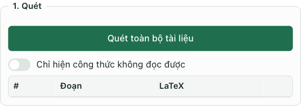
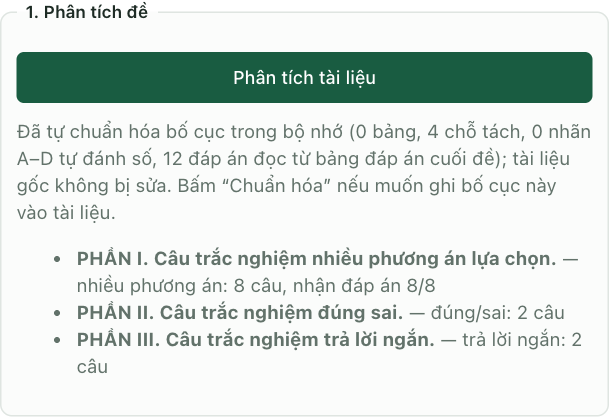
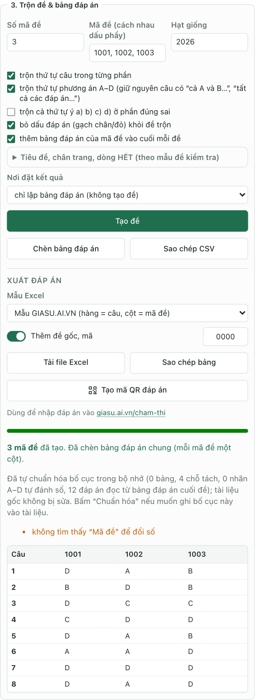
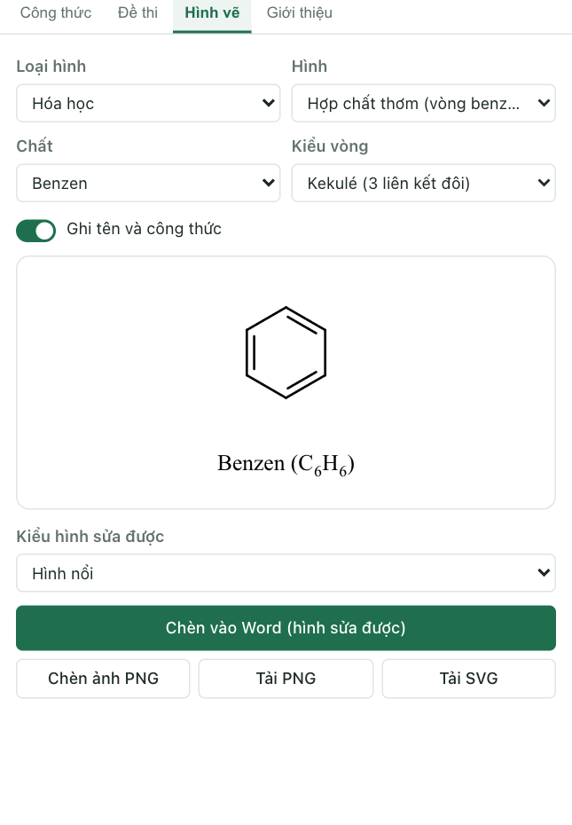
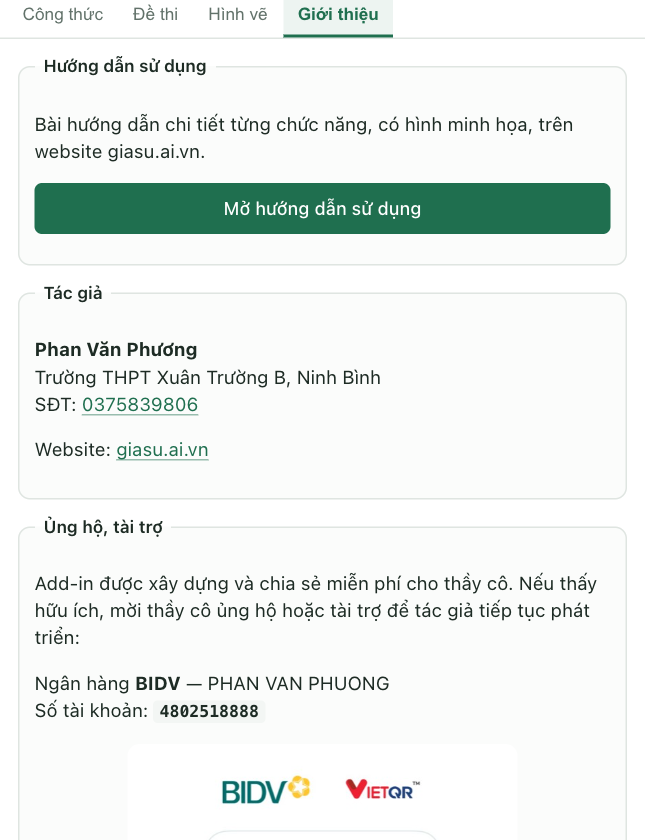

Hướng dẫn sử dụng “TexCraft Công thức & Đề thi” trong Word
Từng chức năng, từng bước, có hình minh họa. Chưa cài add-in? Xem hướng dẫn cài đặt trước.
0. Bắt đầu nhanh · 1. Tab Công thức · 2. Tab Đề thi · 3. Tab Hình vẽ · 4. Tab Giới thiệu · 5. Mẹo & câu hỏi thường gặp
0. Bắt đầu nhanh
- Mở tài liệu trong Word, vào tab TexCraft trên Ribbon (hoặc Trang đầu → Add-ins) rồi bấm biểu tượng TexCraft để mở bảng điều khiển bên phải.
- Bảng điều khiển có 4 tab: Công thức, Đề thi, Hình vẽ, Giới thiệu.
- Luôn làm việc trên bản sao. Add-in chỉ ghi vào tài liệu khi bạn bấm các nút như Chuyển, Chuẩn hóa, Chèn vào Word. Mọi thay đổi có thể hoàn tác bằng Ctrl/Cmd + Z, hoặc nút Khôi phục trong tab Công thức.
1. Tab Công thức: quét và chuyển công thức
Dùng khi tài liệu có công thức MathType (đối tượng nhúng), công thức Word hoặc mã LaTeX gõ dạng văn bản ($x^2$) và bạn muốn đổi sang một dạng khác cho đồng nhất.
1.1 Quét tài liệu
Bấm Quét toàn bộ tài liệu: add-in đếm số công thức theo từng loại và liệt kê từng công thức kèm mã LaTeX đọc được. Bấm vào một dòng để Word nhảy tới đoạn chứa công thức đó. Bật Chỉ hiện công thức không đọc được để tìm các công thức cần xử lý thủ công.

1.2 Chuyển công thức
- Chọn Chuyển từ (nguồn) và Chuyển sang (đích). Ô đích chỉ hiện các lựa chọn hợp lệ với nguồn đã chọn:
Nguồn Đích có thể chọn MathType Công thức Word, LaTeX, hoặc MathType (làm lại theo kiểu chữ/cỡ chữ mới) LaTeX Công thức Word hoặc MathType Công thức Word LaTeX hoặc MathType - Chọn phạm vi: Đoạn đang chọn hoặc Toàn bộ tài liệu.
- Tick Tôi đã lưu một bản sao tài liệu rồi bấm Chuyển. Kết quả báo số công thức đã chuyển và số công thức giữ nguyên (kèm lý do).
- Chưa ưng ý: bấm Khôi phục (hoặc Ctrl/Cmd + Z).
1.3 Tùy chọn khi chuyển sang MathType
Khi đích là MathType, hiện thêm các tùy chọn:
- Kiểu chữ: Times New Roman, Cambria… (có chân) hoặc Arial (không chân).
- Kiểu hiển thị: Cổ điển (phân số, tổng, tích phân cỡ lớn như công thức riêng dòng) hoặc Gọn (nhỏ theo dòng chữ).
- Ảnh: vector EMF (nét, khuyên dùng) hoặc ảnh PNG.
- Cỡ chữ: Theo văn bản (tự động), các cỡ có sẵn 10–14 pt, hoặc Số khác… để tự nhập cỡ tùy ý từ 4 đến 200 pt (cho phép số lẻ như 11.5).

2. Tab Đề thi
Tab gồm 4 mục: phân tích đề, chuẩn hóa câu hỏi, trộn đề và bảng đáp án, xuất bài trình chiếu. Add-in hiểu đề thi theo cấu trúc GDPT 2018: Phần I trắc nghiệm nhiều phương án (A–D), Phần II đúng/sai (ý a, b, c, d), Phần III trả lời ngắn; cũng đọc được đề tiếng Anh dạng “Question N.”.
2.1 Phân tích đề và nhận đáp án
Bấm Phân tích để xem add-in nhận được bao nhiêu câu mỗi phần. Đáp án đúng được nhận theo một trong các cách sau:
- Định dạng nhãn đáp án đúng: nhãn A./B.… (hoặc ý a) đúng) được gạch chân, tô chữ đỏ hoặc highlight.
- Bảng đáp án ở cuối đề (mới): nếu đề không đánh dấu đáp án nhưng có bảng đáp án sau dòng “HẾT” / “BẢNG ĐÁP ÁN”, add-in tự đọc và gán đáp án cho từng câu. Chấp nhận:
- Bảng ngang: hàng trên là số câu, hàng dưới là đáp án (
Câu | 1 | 2 | 3/Đáp án | A | B | C); - Bảng dọc: mỗi hàng một câu (
1 | A), hoặc nhiều cặp trên một hàng; - Dòng chữ:
1.A 2.B 3.C,Câu 1: B; - Đúng/sai:
Câu 1: a) Đ b) S c) S d) ĐhoặcĐSSĐ; - Trả lời ngắn:
Câu 1: 42.
- Bảng ngang: hàng trên là số câu, hàng dưới là đáp án (
Câu nào chưa có đáp án được liệt kê thành các nút; bấm vào để Word nhảy tới câu đó.

2.2 Chuẩn hóa câu hỏi
Đưa đề về một định dạng thống nhất. Các tùy chọn:
| Tùy chọn | Tác dụng |
|---|---|
| Đánh số lại câu | Theo từng phần (mỗi phần bắt đầu từ Câu 1), liên tục toàn đề, hoặc không đổi |
| Căn lề phương án | Tự động (1/2/4 cột theo độ dài), luôn 4 cột, 2 cột, mỗi phương án một dòng, hoặc giữ nguyên |
| Từ trong nhãn câu | Giữ nguyên, đổi tất cả thành “Câu N.” hoặc “Bài N.” |
| Phông chữ, cỡ chữ, cỡ công thức | Đồng bộ toàn bộ nội dung câu hỏi |
| Nhãn A. B. C. D. | In đậm, viết hoa, có dấu chấm |
| Nhãn “Câu N.” (mới) | In đậm nhãn câu; chọn màu nhãn (đen, đỏ đậm, xanh dương, xanh navy, xanh lục, tím, cam hoặc màu tùy ý); xuống dòng sau nhãn để nội dung câu bắt đầu ở dòng mới |
| Giữ câu hỏi và phương án cùng trang | Tránh câu hỏi bị cắt đôi giữa hai trang |
Tick Tôi đã lưu một bản sao tài liệu rồi bấm Chuẩn hóa.

2.3 Trộn đề và bảng đáp án
- Số mã đề và Mã đề: mặc định mã đề gồm 4 chữ số (1001, 1002, 1003…). Nhập một số để làm mã đầu (các mã sau tăng dần), hoặc nhập nhiều mã cách nhau bằng dấu phẩy (ví dụ
1001, 1002, A1); khi đó add-in tạo đúng các mã đó. Các mã không được trùng nhau. - Hạt giống: cùng hạt giống cho cùng kết quả trộn, đổi số để có cách trộn khác.
- Chọn kiểu trộn: thứ tự câu, thứ tự phương án A–D, thứ tự ý a) b) c) d) (phần đúng/sai); bỏ dấu đáp án khỏi đề trộn; thêm bảng đáp án vào cuối mỗi đề. Các câu dùng chung dữ kiện và phương án như “cả A và B…” được giữ nguyên vị trí.
- Mở mục Tiêu đề, chân trang, dòng HẾT để chèn khối tiêu đề (Sở, Trường, Kỳ thi, Họ tên, Mã đề) và chân trang “Trang X/Y – Mã đề”.
- Nơi đặt kết quả: mỗi mã đề một tài liệu mới; chèn nối tiếp vào cuối tài liệu này; hoặc chỉ lập bảng đáp án.
- Bấm Tạo đề.
Bảng đáp án chung: các mã đề được gộp vào một bảng, chia theo cột: cột đầu là số câu, mỗi mã đề một cột (chia riêng từng phần: nhiều phương án, đúng/sai, trả lời ngắn). Khi chọn “chèn nối tiếp” hoặc “chỉ lập bảng đáp án”, bảng này được chèn vào cuối tài liệu hiện tại. Khi mỗi mã đề một tài liệu mới, mỗi đề chỉ kèm đáp án của chính nó để học sinh không thấy đáp án mã khác.

Xuất đáp án: tải file Excel (mẫu GIASU.AI.VN: hàng là câu, cột là mã đề; hoặc mẫu TEXCRAFT), sao chép bảng/CSV, hoặc tạo mã QR đáp án để nhập nhanh vào giasu.ai.vn/cham-thi chấm thi trắc nghiệm. Có thể thêm “đề gốc” với mã riêng (mặc định 0000).
2.4 Xuất bài trình chiếu PowerPoint
Tạo file .pptx 16:9 từ đề hiện tại (hoặc từ một mã đề vừa trộn), có tương tác chọn đáp án đúng/sai, chạy hoàn toàn trên máy bạn. Chọn giao diện và bấm tạo.

3. Tab Hình vẽ
Vẽ hình minh họa cho đề thi và bài giảng, chèn vào Word dưới dạng hình sửa được (nhóm hình vector, hộp chữ công thức) hoặc ảnh PNG; cũng có thể tải PNG/SVG.
- Chọn Loại hình: Bảng biến thiên, Đồ thị, Miền nghiệm, Hình học, Hóa học, Vật lí, Sinh học.
- Chọn Hình cụ thể, điền thông số (hàm số, tên điểm, cỡ…); hình xem trước cập nhật ngay.
- Bấm Chèn vào Word (hình sửa được), Chèn ảnh PNG, Tải PNG hoặc Tải SVG.

Hình vẽ môn Hóa học, hợp chất thơm (vòng benzen)
Trong Hóa học chọn Hợp chất thơm (vòng benzen), sau đó chọn chất và kiểu vòng:
- Chất: benzen, toluen, etylbenzen, stiren, phenol, anilin, clobenzen, brombenzen, nitrobenzen, benzanđehit, axit benzoic, o/m/p-xilen, o/m/p-crezol, TNT (2,4,6-trinitrotoluen), axit picric, 2,4,6-tribromphenol, biphenyl, naphtalen.
- Kiểu vòng: Kekulé (3 liên kết đôi) hoặc vòng tròn (hệ thơm).
- Bật/tắt Ghi tên và công thức dưới hình.

Các sơ đồ phân tử đơn giản khác (H₂O, CO₂, NH₃, CH₄, etan, etilen, axetilen, etanol…), dụng cụ thí nghiệm, mô hình nguyên tử Bo nằm trong cùng nhóm Hóa học.
4. Tab Giới thiệu
Thông tin tác giả, cách ủng hộ phát triển và nút Mở hướng dẫn sử dụng đưa bạn tới chính bài viết này.

5. Mẹo và câu hỏi thường gặp
- Máy cấu hình yếu / Word cũ chạy chậm? Add-in tự chuyển sang chế độ nhẹ (tắt hoạt ảnh, đổ bóng). Có thể ép bằng cách thêm
?litevào địa chỉ. - Công thức MathType dạng đối tượng không đổi được cỡ chữ khi chuẩn hóa: chuyển sang công thức Word ở tab Công thức rồi chuẩn hóa lại.
- Bảng đáp án ghi “?”: câu đó chưa có đáp án. Kiểm tra nhãn đáp án đúng đã được gạch chân/tô đỏ, hoặc bổ sung bảng đáp án ở cuối đề rồi phân tích lại.
- Mất mạng: add-in lưu sẵn phần lõi; phần tính toán cần tải trước trong tab Giới thiệu (bản đầy đủ).
- Cần hỗ trợ? Liên hệ tác giả (thầy Phan Văn Phương) theo thông tin ở tab Giới thiệu.